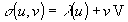

EXPRESS-G diagram
EXPRESS-G diagram| Extrusion linéaire ou surfacique | |
| Oberfläche - Entlang einem Vektor extrudiert |
The IfcSurfaceOfLinearExtrusion is a surface derived by sweeping a curve along a vector.
NOTE Definition according to ISO/CD 10303-42:1992
This surface is a simple swept surface or a generalized cylinder obtained by sweeping a curve in a given direction. The parameterization is as follows where the curve has a parameterization λ(u):The parameterization range for v is -∞ < v < ∞ and for u it is defined by the curve parameterization.V = ExtrusionAxis

NOTE Entity adapted from surface_of_linear_extrusion defined in ISO 10303-42.
HISTORY New entity in IFC2x.
Informal Propositions:
XSD Specification:
<xs:element name="IfcSurfaceOfLinearExtrusion" type="ifc:IfcSurfaceOfLinearExtrusion" substitutionGroup="ifc:IfcSweptSurface" nillable="true"/>EXPRESS Specification:
| ENTITY IfcSurfaceOfLinearExtrusion |
| SUBTYPE OF IfcSweptSurface; |
|
| DERIVE |
|
| WHERE |
|
| END_ENTITY; |
Attribute Definitions:
| ExtrudedDirection | : | The direction of the extrusion. |
| Depth | : | The depth of the extrusion, it determines the parameterization. |
| ExtrusionAxis | : | The extrusion axis defined as vector. |
Inheritance Graph:
| ENTITY IfcSurfaceOfLinearExtrusion |
| ENTITY IfcRepresentationItem |
| INVERSE |
|
| ENTITY IfcGeometricRepresentationItem |
| ENTITY IfcSurface |
| DERIVE |
|
| ENTITY IfcSweptSurface |
|
| ENTITY IfcSurfaceOfLinearExtrusion |
|
| DERIVE |
|
| END_ENTITY; |
 Link to this page
Link to this page